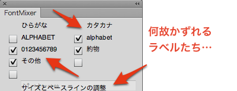

Adobe Fireworks CS6 OSX版でFont Mixerが動作しなかったので、修正しました。
Fireworksで混植ができるFont Mixer［Fireworks拡張機能］
原因
コマンドパネルのボタンを押してもウンともスンともいわなかったため、色々と試してみました。
その結果、コマンドの本体である.jsfファイルをcommandsフォルダに入れ、一度コマンドを直接実行すると、パネルからも実行できることがわかりました。つまり、パネル側から.jsfファイルがうまく読み込みされていない状態になっていたと考えられます。（一度コマンドを実行するとメモリー上に保持するようで、その状態だとパネルからでも実行できる）
で、まさかと思いながらWindowsにFireworks CS6をインストールし、Font Mixerのインストール先の変更をせず試したところ、なぜかこちらは問題なく動作します。あれ？もしかしてOSXだときちんと動いてなかったの？という疑問が……特に不具合の報告はなかったので、まさかダウンロードしていただいた方が、全員がWindowsだったというミラクル？
.jsfファイルの読み込みは、パネルのActionScriptで
fw.runScript( 'path/to/jsf')
を実行し、.jsfファイルを予め読み込むようにしています。ここで出てくるpath/to/jsfの基準となるフォルダが、Commandsフォルダです。
Font MixerはCommand Panelsフォルダにコマンドの本体である.jsfと、パネルの.swfをインストールしているので、パスは../Command Panels/fontMixer.jsfと指定しています。今回はこれがうまく読み込めていないようです。
修正
パスの指定に下手な小細工をしないよう、.jsfをCommandsフォルダへ移動することで、無事動作を確認。ただ、単純に移動させるだけだとコマンドメニューに表示されてしまうので、拡張子を.jsfから.fssに変更しています。デフォルトでインストールされているコマンドに.fssの拡張子がついてモノがあったため、マネをしてみました。
なぜか、OSX版ではラベルがずれて表示されていますが、マウスオーバーすると元に戻るので、とりあえず既知のバグということで。
